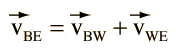
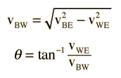

|
Boat in current as example of relative velocity. Assume the resultant speed and bearing as well as the current speed are known.

Since the velocities form a right triangle, any velocity can be found from the triangle relationships if the other two are known.

|